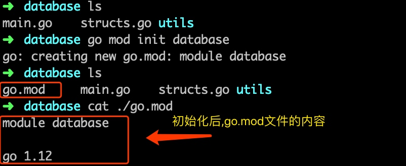
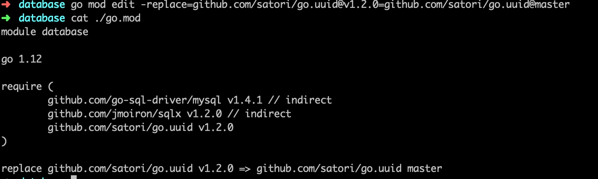
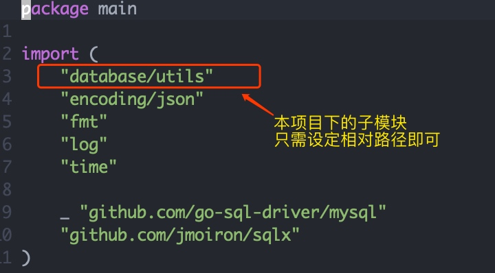

介绍&优势
mod 命令是在 go 1.11版本新增的命令,目的是取代GOPATH,提供go官方的包管理解决方案,使用户可以在非$GOPATH/src 目录下随意的构建项目
- 使用mod命令后,将会在 项目目录下生成 一个 go.mod 文件,记录了go项目中引用的模块
- mod 功能启用时,使用的模块将存储在
$GOPATH/pkg/mod中,方便其他项目复用 - 当然也可以选择使用
go mod vendor命令,项目依赖的模块,保存到项目目录下的 vendor目录中
参数
| 命令 | 说明 |
|---|---|
| download | 下载依赖的模块到本地缓存中 |
| edit | 编辑go.mod |
| graph | 打印模块依赖图 |
| init | 在当前目录初始化 go.mod文件 |
| tidy | 下载缺少的模块, 移除不用的模块 |
| vendor | 将依赖从本地缓存复制一份到 ./vendor 目录中 |
| verify | 校验依赖是否正确 |
| why | 解释某个模块为什么被依赖 |
开始使用
初始化
使用
go mod init {项目名称}来对项目进行初始化

修改依赖为指定版本
因为 go.uuid 作者在某个版本修改了api导致原有代码无法使用
这里使用 go mod edit -replace命令,替换指定的版本
修改完成后 go.mod 文件详情
也可以用来替换一些 国内被墙掉的一些模块 如golang.org/*/*

内部模块需要变更为相对路径
